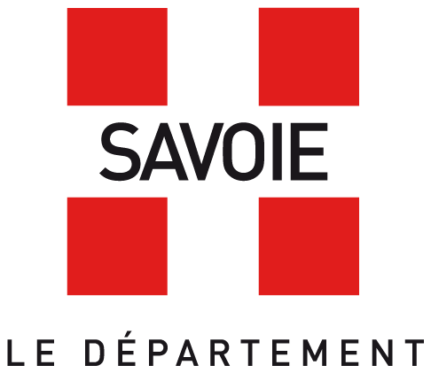
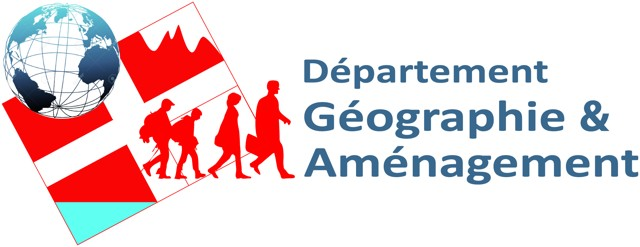
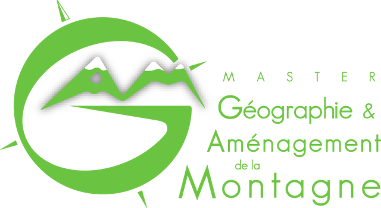

Merci de faire un bout de chemin avec nous !
Qu'attendez-vous en arrivant sur un site d'activités de pleine nature ? Dites-nous ce qui vous aide et ce qui vous manque : on vous écoute.

Qu'attendez-vous en arrivant sur un site d'activités de pleine nature ? Dites-nous ce qui vous aide et ce qui vous manque : on vous écoute.
Ce questionnaire est réalisé par un groupe d'atelier d'aménagement du Master 2 Géographie et Aménagement de la Montagne (Université Savoie Mont Blanc), pour le Conseil départemental de la Savoie. Il porte sur la pertinence de la signalétique en entrée des sites d'activités de pleine nature.
Votre participation est libre et ne vous engage à rien. Vous pouvez la quitter à tout moment en fermant la page : seul un questionnaire terminé est enregistré.
Les réponses sont anonymes. Le questionnaire ne demande ni nom ni numéro de téléphone, et n'enregistre pas votre adresse IP. Les informations de profil (tranche d'âge, situation professionnelle, département ou pays d'origine, genre, personnes avec qui vous sortez) servent uniquement à décrire l'ensemble des participants et ne permettent pas de vous identifier.
Nous enregistrons aussi vos réponses aux questions, y compris les réponses libres et votre avis sur l'enquête, les points que vous placez sur les photos de panneaux, vos notes des installations d'accueil, la durée de réponse et un identifiant aléatoire qui distingue les questionnaires entre eux, sans aucun lien avec votre identité. Merci de ne pas indiquer dans les réponses libres d'informations permettant de vous identifier.
À la fin du questionnaire, vous pouvez laisser votre adresse e-mail pour recevoir les résultats de l'enquête. C'est facultatif. Elle est enregistrée dans une liste séparée, sans lien avec vos réponses, et sert uniquement à vous envoyer les résultats. Elle n'est ni transmise ni réutilisée, et elle est supprimée une fois les résultats envoyés, au plus tard le 1er mars 2027.
Les données servent uniquement à l'analyse menée dans le cadre de cet atelier et à sa restitution au Conseil départemental de la Savoie, sous forme de résultats d'ensemble (statistiques, cartes de chaleur). Elles ne sont ni vendues ni transmises à des tiers à des fins commerciales.
Les réponses ne sont pas conservées au-delà du 1er mars 2027 : elles sont supprimées au plus tard à cette date.
Les réponses sont stockées dans un tableur Google (Google Sheets) géré par l'équipe de l'atelier, dont l'accès est protégé par mot de passe. Le site n'utilise ni cookie de suivi ni outil de mesure d'audience.
Les réponses étant anonymes, il n'est pas possible de retrouver celles d'une personne en particulier pour les consulter ou les supprimer. En cas de doute, ne validez pas le questionnaire : rien n'est enregistré tant que vous n'avez pas cliqué sur « Envoyer mes réponses ».
Si vous avez laissé votre adresse e-mail, vous pouvez demander à tout moment qu'elle soit supprimée en écrivant à atelier.cd73.gam@gmail.com.

